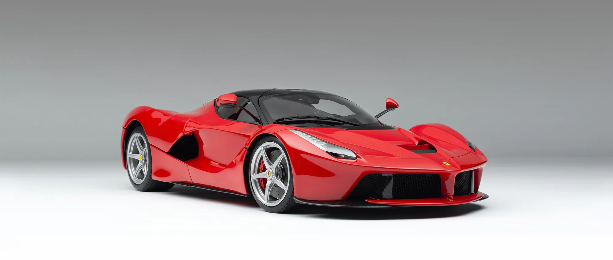
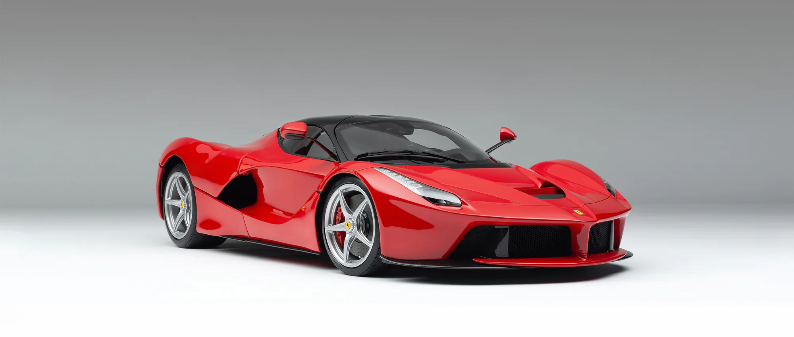

Ferrari 250 GTO

.jpg)
Diseño
Cuando el Ferrari 250 GTO se presentó en 1962, fue apodado como el "Testa Rossa con techo". Este apodo resultó bastante preciso, ya que el 250 GTO incorporó elementos y tecnología provenientes del prototipo de competición 250 Testa Rossa. Este nuevo modelo 250 representó un nivel de evolución superior en comparación con cualquier otro automóvil GT de esa época. Su motor, conocido como "Tipo 168/62", incorporaba válvulas de mayor tamaño, materiales más ligeros, un sistema de lubricación por cárter seco y una menor altura al suelo para mejorar la maniobrabilidad y la estabilidad en pista.
El chasis de acero del Ferrari 250 GTO presentaba un bastidor que se soldaba a mano utilizando soldadura autógena. Este chasis, designado como "539/62", se derivó del utilizado en el 250 GT Competizione de 1961. Estaba cubierto por una carrocería de aluminio extremadamente ligera y eficiente desde el punto de vista aerodinámico. Entre las mejoras adicionales del vehículo se incluían frenos de disco, suspensiones más rígidas con la capacidad de realizar ajustes múltiples y un centro de gravedad más bajo. El interior del Ferrari 250 GTO tenía un carácter rudimentario pero atractivo, lo que reflejaba su naturaleza de automóvil de competición. Solo las butacas estaban revestidas con un material ligero, mientras que el resto del interior exhibía el material base. El único toque de elegancia lo proporcionaba el volante con un aro de madera. El panel de instrumentos no incluía un velocímetro ni un odómetro.
.jpg)
Especificaciones técnicas
- Motor delantero V12 a 60º “Tipo 168/62”
- Cilindrada: 2.953 cm3
- Relación de compresión: 9,8 a 1
- 24 válvulas SOHC
- 6 Carburadores Webber-38 DCN
- Potencia: 302 hp a 7.500 rpm
- Torque máximo: 216 libras pie a 5.500 rpm
- Limite: 8.500 rpm
- Caja de cambios manual de cinco marchas
- Tracción trasera
- Aceleración 0 a 100 km/h: 6,1 s
- Aceleración 0 a 160 km/h: 13,1 s
- 1/4 de milla: 13,5 s
- Velocidad máxima: 279 km/h
- Frenos a disco Dunlop en 4 ruedas (hidráulicos)
- Suspensión delantera: espoleta doble con resortes, amortiguadores ajustables y barra anti-rolido
- Suspensión trasera: puente con resortes helicoidales y amortiguadores ajustables
Dimensiones
- Largo: 4.400 mm
- Ancho: 1.675 mm
- Alto: 1.245 mm
- Entre ejes: 2.400 mm
- Llantas delanteras: 15 x 6 pulgadas
- Llantas traseras: 15 x 6,5 pulgadas
- Neumáticos delanteros: Dunlop R5/R6 600L x 15
- Neumáticos traseros: Dunlop R5/R6 700L x 15
- Peso: 1.043 kg
- Relación peso/potencia: 0,29 hp/kg
Ferrari Testarossa

.jpg)
Diseño y características
El Ferrari Testarossa se introdujo en 1984 como el sucesor del 512 BBi. Este nuevo vehículo de Ferrari causó un gran impacto en todo el mundo, tanto por su impresionante rendimiento como por su diseño distintivo. Es uno de los diseños más influyentes en la historia de los automóviles deportivos y ha dejado una huella tan profunda como la de muy pocos vehículos.
El Testarossa hizo su debut en 1984 como sucesor del Ferrari 512 Berlinetta Boxer, un automóvil que descendía del modelo 512 de la década de 1970. El flamante Testarossa continuaba la tradición de los automóviles Ferrari tipo Berlinetta, con un motor ubicado en posición central detrás del conductor, equipado con 12 cilindros opuestos a 180 grados. Este tipo de motor se conoce como motor "Boxer".
La base del Ferrari Testarossa era la misma del 512 BBi, aunque el nuevo auto Testarossa agregaba amortiguadores hidráulicos a los triángulos superpuestos del tren trasero. El motor era similar en concepto pero más avanzado, con mejor inyección de combustible y cuatro válvulas por cilindro.
Una de las modificaciones técnicas más emblemáticas, y que tuvo un impacto significativo en el diseño exterior de la carrocería, fue el cambio en el sistema de refrigeración. Mientras que el 512 BB contaba con un solo radiador en la parte frontal, el Testarossa adoptó dos radiadores situados delante de cada rueda trasera. Esto condujo a la incorporación de las impresionantes tomas de aire laterales.
El Ferrari Testarossa se produjo desde 1984 hasta 1990. El Testarossa y sus sucesores, el 512 M y el 512 TR, lograron alcanzar una asombrosa cifra de casi 10,000 unidades fabricadas en un período de 12 años, desde 1984 hasta 1996. Teniendo en cuenta que se trataba de un automóvil de producción limitada y artesanal, esta cifra es extraordinariamente alta.
Especificaciones técnicas
.jpg)
.jpg)
- Motor central V12 Boxer a 180º
- Cilindrada: 4.942 cm3
- 48 válvulas DOHC
- Inyección de combustible
- Caja de cambios manual de cinco marchas
- Tracción trasera
- Frenos: discos ventilados
- Suspensión: independiente en las 4 ruedas
- Potencia: 390 hp a 6.300 rpm
- Torque máximo: 354 libras pie a 4.500 rpm
- Aceleración 0 a 100 km/h: 5,8 s
- Velocidad máxima: 290 km/h
Dimensiones
- Largo: 4.486 mm
- Ancho: 1.976 mm
- Alto: 1.130 mm
- Entre ejes: 2.550 mm
- Peso: 1.660 kg
- Relación peso/potencia: 0,23 hp/kg
Ferrari F40

.jpg)
Diseño y características
La carrocería del Ferrari Testarossa, diseñada por Pininfarina, incorporaba paneles fabricados con diversos compuestos, incluyendo Kevlar y fibra de carbono. En las secciones que necesitaban emplear metal, se utilizaba aluminio para reducir el peso sin comprometer la rigidez estructural. Para alcanzar un peso realmente mínimo, el automóvil contaba con un parabrisas y ventanas de plástico. Además, las puertas ni siquiera tenían manijas. El interior excluía cualquier elemento prescindible, como sistemas de sonido, equipamiento para pasajeros, alfombras, entre otros. Gracias a estas medidas, lograron reducir el peso del automóvil a tan solo 1100 kg, una hazaña que muy pocos automóviles súper deportivos actuales pueden igualar.
Especificaciones técnicas
.jpg)
.jpg)
- Motor central V8 a 90º Biturbo
- Cilindrada: 2.936 cm3
- 32 válvulas DOHC
- Boost 16 psi
- Caja de cambios manual de cinco marchas
- Tracción trasera
- Frenos: discos ventilados
- Suspensión: independiente en las 4 ruedas
- Potencia: 478 hp a 7.000 rpm
- Torque máximo: 423 libras pie a 4.000 rpm
- Aceleración 0 a 100 km/h: 3,5 s
- Aceleración 0 a 160 km/h: 7,6 s
- Velocidad máxima: 324 km/h
Dimensiones
- Largo: 4430 mm
- Ancho: 1980 mm
- Alto: 1130 mm
- Entre ejes: 2450 mm
- Neumáticos: 245/40 ZR17 adelante y 335/35 ZR17 atrás
- Peso: 1100 kg
- Relación peso/potencia: 0,43 hp / kg
Ferrari F50
Caracteristicas
La Ferrari F50 se construyó utilizando elementos procedentes de la Fórmula 1. Tanto las suspensiones como los frenos se adaptaron de los monoplazas a una versión de vehículo más pesada y carrozada. Las suspensiones traseras visibles en el compartimento del motor son un claro ejemplo de esta adaptación. El motor también proviene de la Fórmula 1 y se ajustó para satisfacer las necesidades de un automóvil de calle. Este V12 produce una potencia impresionante de 520 caballos a 8.500 rpm.
Por otro lado, se ha hablado mucho sobre el trabajo aerodinámico realizado en el túnel de viento. Sin embargo, la realidad es que, desde el punto de vista aerodinámico, no está a la altura de su mecánica impresionante. A pesar de que el automóvil es estable, su coeficiente de resistencia aerodinámica (Cx) de 0,37 revela que las llamativas líneas de diseño han penalizado su rendimiento en este aspecto. La Ferrari F50 está equipada con un motor V12 de 4.700 cm³ de cilindrada situado en posición central. Con un total de 60 válvulas (cinco por cilindro, tres de admisión y dos de escape), este V12 es uno de los motores más impresionantes de la historia de Ferrari. Este motor entrega una potencia máxima de 520 caballos de fuerza a 8.500 rpm, justo en el límite de revoluciones configurado electrónicamente por el fabricante. El par motor máximo es de 471 Nm a 6.500 rpm. El vehículo cuenta con un sistema de gestión electrónica Bosch Motronic 2.7 que incorpora un doble sistema de inyección multipunto. La potencia se transmite a las ruedas a través de una caja de cambios manual de 6 velocidades con una carcasa de magnesio. La tracción es trasera y presenta un diferencial autoblocante de láminas de frecuencia variable (40 por ciento en aceleración y 25 por ciento en retención).
Especificaciones tecnicas
.jpg)
.jpg)
| Chasis | Monocasco de fibra de carbono. |
|---|---|
| Materiales del motor | Bloque de hierro fundido modular, cabezas de aleación de aluminio ligera y pistones forjados Mahle. |
| Distribución | Doble (DOHC) árbol de levas a la cabeza y 5 válvulas por cilindro (60 en total) accionadas por cadena, con admisión variable. |
| Relación de compresión | 11,3:1 |
| Sistema de lubricación | Cárter seco. |
| Embrague | Discos dobles. |
| Capacidad del depósito de combustible | 105 L (27,7 galAm). |
| Distribución de peso | 42% (del.) / 58% (tras.) |
| 1/4 milla (402 m) | 12,1 segundos a 123 mph (198 km/h). |
| 0-1 km (0,62 milla) | 21,7 segundos . |
| 0-1 milla (1,61 km) | 30,3 segundos. |
Dimensiones
La Ferrari F50 presenta las siguientes dimensiones: 4.480 mm de largo, 1.120 mm de alto y 1.986 mm de ancho, con una distancia entre ejes de 2.580 mm. Impresionantemente, su peso es bastante bajo, solo 1.230 kg. Este automóvil es un ejemplo de ingeniería avanzada que permite un rendimiento excepcional, especialmente en aceleración desde parada. Las llantas de magnesio tienen un diámetro de 18 pulgadas. El tanque de combustible tiene una capacidad de 105 litros y está construido con goma de tipo aeronáutica, similar a la utilizada en los tanques de combustible de los vehículos de Fórmula 1.
Ferrari Enzo

.jpg)
Diseño
La cuestión de si a Enzo Ferrari le gustaría este automóvil es un tema difícil de determinar. A pesar de que el diseñador japonés Ken Okuyama se ha convertido en una figura influyente, muchas personas en la industria consideran que para diseñar un Ferrari se requiere un toque italiano que comprenda la tradición, alguien como Mauricio Corbi, conocido por su buen gusto y la habilidad para lograr elegancia con esencia deportiva. Cuando no se cuentan con esos recursos mencionados, el resultado puede ser una combinación de un chasis y un motor de prestaciones asombrosas cubiertos por un diseño con discontinuidades formales. En el interior del Ferrari Enzo, el volante de 350 mm de diámetro es una característica destacada. Este volante incluye numerosos controles que lo asemejan a los de un vehículo de Fórmula 1. Incluso en la parte superior, presenta una fila de LEDs que indican las revoluciones del motor. Detrás del volante se encuentran las paletas de accionamiento de la caja de cambios, conocidas como "paddle shifts".
Especificaciones técnicas
.jpg)
.jpg)
- Motor central V12 5.998 cm3
- 48 válvulas VVT (DOHC)
- Potencia 650 hp a 7.800 rpm
- Torque máximo: 383 libras pie a 3.000 rpm
- Límite: 8.000 rpm
- Caja manual de 6 marchas
- Embrague automático
- Tracción trasera
- 0 a 100 km/h en 3,5 s
- ¼ de milla: 11,2 s a 218 km/h
- Velocidad máxima: 336 km/h
- Consumo de combustible: 3,4 km/l en ciudad y 5,1 km/l en ruta
Dimensiones
- Largo: 4.702 mm
- Alto: 1.147 mm
- Ancho: 2.030 mm
- Entre ejes: 2.650 mm
- Diámetro llantas: 19”- 19”
- Neumáticos: 245/35 ZR19 - 345/35 ZR19
- Peso: 1.480 kg
- Distribución de peso: 44-56
Ferrari 458 Italia

.jpg)
Diseño
El Ferrari 458 Italia es un automóvil superdeportivo de 2 puertas y 2 plazas, con motor montado en posición central-trasera de forma longitudinal y tracción trasera. Fue producido por el fabricante italiano Ferrari desde 2009 hasta 2015 y sirvió como reemplazo del Ferrari F430. Posteriormente, fue sustituido por el Ferrari 488, que fue presentado en el Salón del Automóvil de Ginebra en 2015.
El Ferrari 458 Italia fue revelado a la prensa el 28 de julio de 2009 y posteriormente presentado en el Salón del Automóvil de Fráncfort en el mismo año.El diseño del automóvil fue obra de Donato Coco en colaboración con Pininfarina, siguiendo la tradición de los últimos modelos de Ferrari. Su estilo y características se centraron en la eficiencia aerodinámica, generando una carga de 140 kg (309 libras) a una velocidad de 200 km/h (124 mph). Para el interior, se incorporaron aportes del ex piloto de Fórmula 1 de Ferrari, Michael Schumacher, incluyendo un nuevo volante que concentra muchas de las características y controles frente al conductor, en una disposición similar a la de los autos de carreras.De acuerdo con la revista Autocar, el diseño del Ferrari 458 Italia se inspiró en el Ferrari Enzo y en su automóvil conceptual Mille Chili. En términos de superdeportivos, su forma es extremadamente aerodinámica, con un coeficiente de arrastre de tan solo 0,32. Se concibió como el modelo más deportivo de Ferrari y se enorgullece de tener la mayor potencia específica para un motor naturalmente aspirado. Su nombre en código es "F142", derivado de su motor V8 de 4.5 litros, como distinción del Ferrari California, que se lanzó simultáneamente.
El Ferrari 458 Italia presenta una silueta redondeada y esculpida para lograr la máxima eficiencia aerodinámica. Sus faros delanteros son novedosos y alargados, con iluminación LED. En la parte frontal, se pueden apreciar aletines en la parrilla inferior, pero la parte trasera es aún más radical y deportiva. Cuenta con un difusor dividido en dos piezas y una triple salida de escape centrada que se ha convertido en uno de los detalles distintivos del sucesor del Ferrari F430. La marca afirma que este diseño proporciona el sonido característico que se espera de un Ferrari. El Ferrari 458 Italia es el sucesor del F430 y, por lo tanto, el "nieto" del 360 Modena. Con esta herencia, la marca ha apostado fuerte en su diseño, resultando en un aspecto arriesgado que conserva elementos continuistas, pero también presenta importantes variaciones.
Especificaciones técnicas
Motor:
- tipo: V8 90°
- Cilindrada total: 4497cm3
- Potencia maxima: 570 CV a 9000 rev/min**
- Par maximo: 540 Nm a 6000 rev/min
- Potencia esoecifica: 127 CV/I
- Relacion de compresion: 12,5:1
Neumaticos:
- Delanteros: 235/35 ZR20 8,5”
- Traseros: 295/35 ZR20 10,5”
Dimensiones y pesos
- Longitud: 4527mm
- Anchura: 1937mm
- Altura: 1213mm
- Distancia entre ejes: 2650mm
- Peso en seco: 1380 kg*
- Distribucion de los pesos: 42% Del. - 58% Tras.
Prestaciones:
- Velocidad maxima: >325km/h
- 0-100 KM/H: 3.4s
- Relacion peso/potencia: 2,42kg/CV
Controles
- Controles electronicos: E-Diff3, F1-Trac, ABS deportivo
Ferrari LaFerrari
 

.webp)
Diseño
El automóvil y su nombre definitivo se presentaron oficialmente en el Salón del Automóvil de Ginebra en 2013. Este vehículo es el sucesor del Ferrari Enzo, y se planeó fabricar un total de 499 unidades, a pesar de haber recibido alrededor de 700 solicitudes por escrito de clientes elegibles. El precio inicial de este automóvil superdeportivo superaba los 1,300,000 dólares (1,512,271 dólares en 2023). Además, se encargó la fabricación de un automóvil adicional para subastarlo y destinar los fondos recaudados en beneficio de las víctimas del terremoto que ocurrió en Italia central en agosto de 2016. El Ferrari LaFerrari es un automóvil biplaza con carrocería cupé de dos puertas, con el motor ubicado en posición central-trasera de forma longitudinal y tracción trasera. Su diseño se basó en los resultados obtenidos en pruebas con el Ferrari FXX y en investigaciones dirigidas por el Laboratorio MilleChili Project de la Universidad de Módena.
El Ferrari LaFerrari marcó un hito importante en la historia de la marca, ya que fue el primer Ferrari diseñado en su totalidad dentro del Centro Stile Ferrari, bajo la dirección de Flavio Manzoni. Esto significó la ruptura de la larga tradición de colaboración con Pininfarina, que había estado diseñando vehículos Ferrari desde 1951. A pesar de esta decisión, Ferrari ha afirmado que aún hay dos modelos en desarrollo que contarán con la colaboración de Pininfarina, y que no se espera un final en la relación de negocios entre las dos compañías.
Mecánica
El Ferrari LaFerrari es el primer vehículo híbrido eléctrico producido por la casa de Maranello, lo que lo convierte en el Ferrari más potente jamás fabricado y le permite lograr una reducción del 40% en el consumo de combustible. Este superdeportivo está equipado con el mismo motor V12 naturalmente aspirado de 6262 cm³ (6.3 L; 382.1 plg³) que se encuentra en el Ferrari F12berlinetta. Este motor desarrolla una potencia máxima de 800 CV (789 HP; 588 kW) a 9,000 rpm y un par máximo de más de 700 N·m (516 lb·pie) a 6,750 rpm. Además, cuenta con asistencias electrónicas como control de tracción, control de estabilidad y un diferencial electrónico de tercera generación. La posición del conductor dentro del habitáculo, junto con el centro de gravedad y la eficiencia, se consideraron aspectos primordiales en su diseño. A pesar de las especulaciones iniciales que sugerían que el LaFerrari podría estar equipado con una nueva motorización de 7.3 litros, finalmente conservó el motor V12 de 6.3 litros mencionado anteriormente.
El Ferrari LaFerrari cuenta con una unidad de freno regenerativo (KERS) similar a la utilizada en los automóviles de Fórmula 1. Esta unidad puede ser utilizada en descargas cortas y está compuesta por dos motores eléctricos desarrollados en colaboración con Magneti Marelli, que en conjunto suman 120 kW (163 CV; 161 HP), y una batería con un peso de 60 kg (132 libras). La batería se recarga mediante la recuperación de energía del motor de gasolina. La potencia total combinada del sistema se sitúa en 963 CV (950 HP; 708 kW) y el par máximo es de más de 900 N·m (664 lb·pie). Aunque oficialmente Luca di Montezemolo había declarado que el LaFerrari no podía circular en modo eléctrico, existen pruebas de que puede moverse en cortos lapsos utilizando únicamente la propulsión eléctrica.
El Ferrari LaFerrari está equipado con una caja de cambios de doble embrague de siete marchas, similar a la utilizada en un automóvil de Fórmula 1. Su chasis está construido con fibra de carbono y Kevlar, lo que le confiere un peso cercano a los 1,250 kg (2,756 libras) en vacío. Los frenos de disco son de carbono-cerámica y llevan la firma de Brembo. En la parte delantera, tienen un diámetro de 398 x 36 mm (15,7 x 1,4 pulgadas), mientras que en la parte trasera, miden 380 x 34 mm (15,0 x 1,3 pulgadas). Las llantas Pirelli P-Zero tienen dimensiones de 265/30 R 19 pulgadas (48,3 cm) en la parte delantera y 345/30 R 20 pulgadas (50,8 cm) en la trasera. La marca afirma que las emisiones de CO2 de este automóvil son de 330 g (11,6 onzas)/km.
Especificaciones técnicas
| Materiales del motor | Bloque y cabezas de aleaciones de aluminio |
|---|---|
| Distribución | Doble (DOHC) árbol de levas a la cabeza por cada bancada de cilindros y 4 válvulas por cilindro (48 en total), con VVT |
| Alimentación | Inyección de combustible, naturalmente aspirado |
| Diámetro x carrera | 94 x 75,2 mm (3,70 x 2,96 pulgadas) |
| Relación de compresión | 13.5:1 |
| Embrague | Discos dobles. |
| Corte de inyección (línea roja) | 9250 rpm |
| Potencia específica | 127,8 CV/litro |
| Sistema de refrigeración | Por agua |
| Sistema de lubricación | Cárter seco |
| Emisiones de CO2 | 330 g (11,6 onzas)/km |
| Distribución de peso | 41% delantero y 59% trasero |